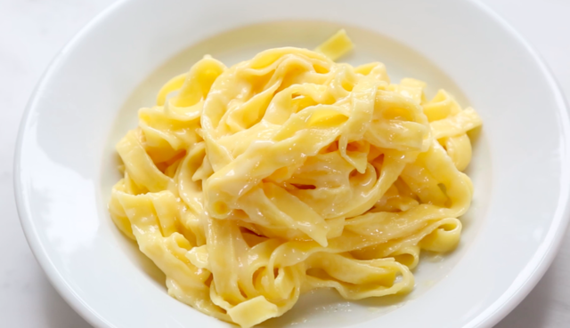

Melissa Logan, CC BY-SA 4.0, via Wikimedia Commons
Description
Fettuccine Alfredo is a classic Italian dish that you can make at home with just a few simple ingredients. The dish was created in the early 19th century by Alfredo Di Lelio of Italy, where it is known as fettuccine al burro.
Ingredients
24 ounces dry fettuccine pasta
1 cup butter
¾ pint heavy cream
table salt and black pepper
garlic salt
¾ cup grated Romano cheese
½ cup grated Parmesan cheese
Steps
Boil a large pot of lightly salted water.
Add pasta to water, then cook for 8 to 10 minutes or until al dente.
In a large saucepan, melt butter into heavy cream over low heat. Add salt, garlic salt, and pepper.
Increase saucepan heat to medium, then stir in Romano and Parmesan cheese until melted.
Once sauce has thickened, add cooked pasta. Toss until coated, then serve.